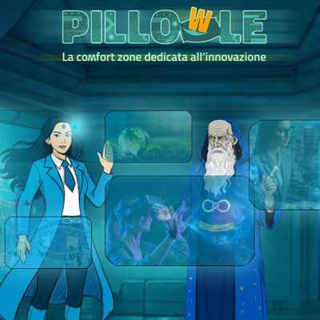

Eventi
La trasformazione digitale che abbiamo conosciuto fino ad oggi è entrata in una fase successiva, con lo sviluppo e la diffusione delle intelligenze artificiali, con particolare riferimento a quella generativa, che accelera nuovamente e in maniera ancora più determinante l’interazione tra persone e tecnologia.
Economia | Eventi | Innovazione
Roma, Forum PA | 19-21 maggio 2025 – Si è svolta dal 19 al 21 maggio, presso il Palazzo dei Congressi a Roma, l’edizione 2025 di Forum PA. Per creare una realtà connessa, capace di innovare e generare valore per i cittadini, c’è bisogno di una PA che funzioni come un punto di incontro tra persone, tecnologie e relazioni. Il Dipartimento del Tesoro ha partecipato con il panel “Connettere per Innovare”, un’iniziativa dedicata all’innovazione e alla collaborazione tra enti pubblici e privati.
Economia | Eventi | Innovazione
Roma, Forum PA | 21-23 maggio 2024 – Si è svolta dal 21 al 23 maggio, presso il Palazzo dei Congressi a Roma, l’edizione 2024 di Forum PA. Al centro la PA a colori, una PA che sia in grado di attrarre i talenti, di lasciarli sperimentare, di accogliere il pensiero divergente per creare valore nei confronti di cittadini e di imprese. Si è inserito in questa cornice anche lo Spazio MEF, che tradizionalmente ospita le progettualità innovative a cura dei Dipartimenti del Ministero.

l format con cui racconto, in modo semplice e diretto, le idee, le sfide e le opportunità del nostro tempo.